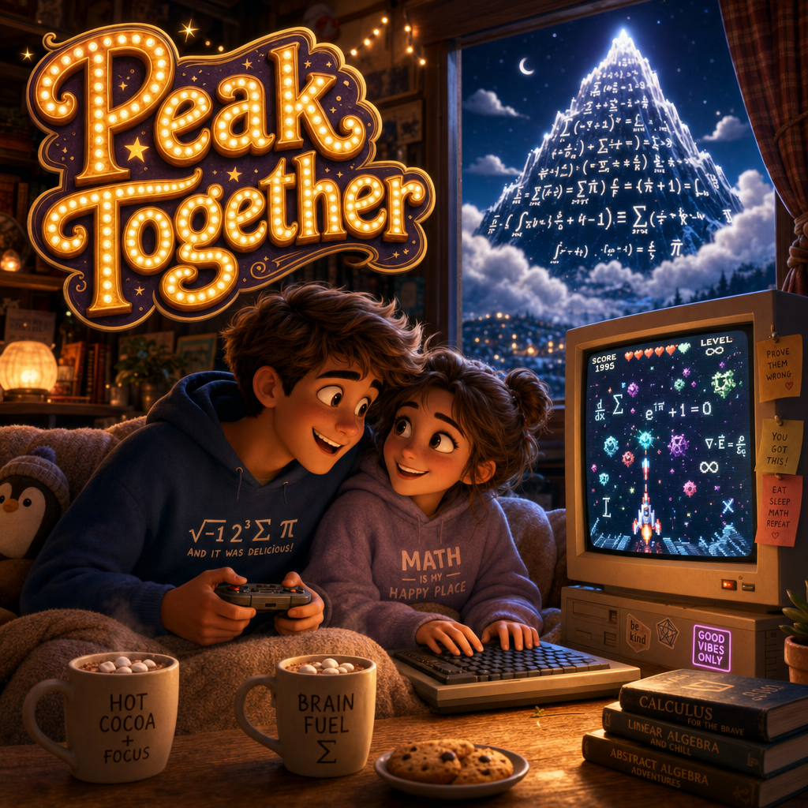
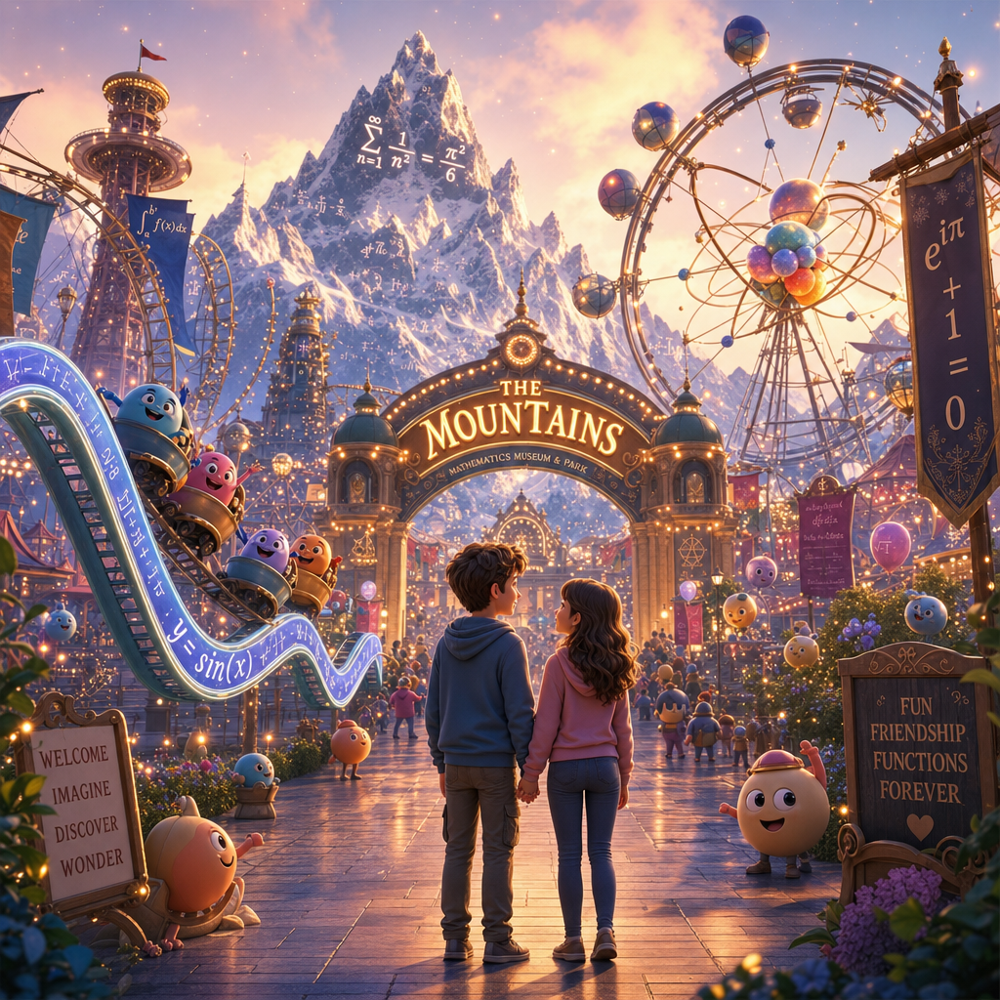
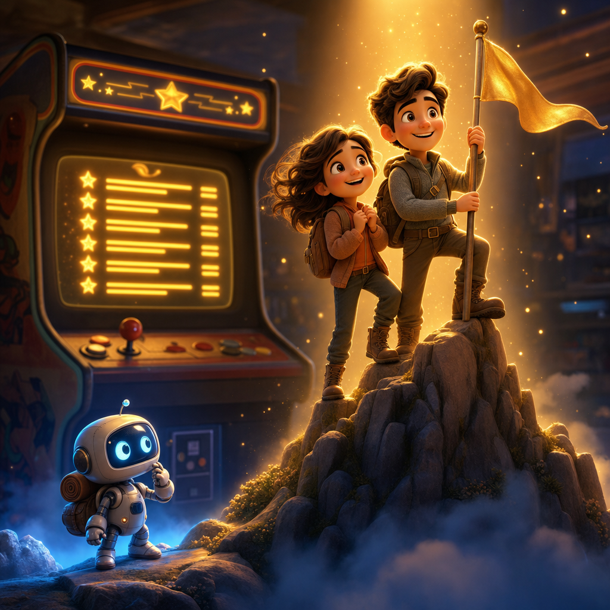

Free, open-source co-op games for curious minds. No signup, ever.
Two players. One screen. The hardest problems in the universe.
Free games that turn the greatest unsolved mysteries of science and math into adventures you climb together.
Think classic '90s games — Descent, Doom, Pinball, Mortal Kombat — lovingly remade so that beating a level means actually understanding a real mathematical idea. Built for two people, side by side.

It's a theme park and a science museum — that you play at home, under a blanket.
Climbing Mount Everest costs around $60,000 and can kill you. Here, the "mountains" are the hardest unsolved problems in science and math — and the climb is free, safe, and shared with someone you love.
Each problem is a peak. The biggest — the Riemann Hypothesis — is our Everest. We turn the path up each mountain into a video game: a playful remake of a beloved classic, rebuilt so that flying through a corridor, solving a puzzle, or winning a duel teaches you the real ideas behind the problem.
No textbooks. No lectures. No grades. Just the thrill of a theme-park ride and the wonder of a science museum, built for two players on one computer — so you have to talk to each other to win.
It's the most epic date night your brain has ever been on.
Theme Park
Real game thrills — flight, combat, racing, puzzles.
Science Museum
Every level teaches a genuine scientific idea.
Built for Two
Designed for two at one screen. Talk, laugh, climb together. (Solo works too.)
How to start climbing (it takes about 2 minutes)
Pick a mountain.
Start with the Riemann Hypothesis — our Everest — through our first game, Descent QED.
Download it, free.
Grab it from GitHub. 100% open-source. No account, no email, no payment — not now, not ever.
Open it.
Unzip and double-click (or run python app.py). You're in.
Grab your partner.
One takes the keyboard or joystick, the other the controller or mouse. You can't win alone — and that's the whole point.
New to this? Our 2-minute setup guide walks you through everything in plain English. If you can download a file, you can climb. And if you're flying solo — you can play both roles yourself; it's just more fun with someone beside you.
The Arcade: classics you remember, reimagined as adventures in genius.
Every game here is a love letter to a classic you (or your parents) grew up with — rebuilt from scratch as a free journey into real science. You'll recognize the thrill instantly. You just won't expect to walk away actually understanding the Basel problem, protein folding, or the geometry of complex numbers.
🚀 DESCENT QED
Inspired by Descent (1995). Fly through six-degrees-of-freedom corridors built from real mathematical proofs. Robots are proof steps. Your tools are named after the mathematicians who discovered them — Euler, Newton, Riemann. To clear a robot, fire the mathematician whose idea that step belongs to.
Get it wrong? No penalty — just a gentle, friendly explanation. Want to go deeper? Drive through Understanding Mode glass road-signs that explain the same idea four ways: graduate, undergrad, high-school, and real-world.
⛏️ QUAKE: PRINCIPIA
Inspired by Quake (1996). A true-3D concept-graph dungeon where every room is a proposition from Newton's Principia. Walls carry real geometric proofs — you "read" a panel by shooting it, then face the demon hidden behind the final proof-wall. Two players, one screen: the Mover walks and navigates, the Shooter aims and reads (keyboard/mouse, or joystick + Xbox). Free — just unzip and play. No Python, no installer.
The last things AI can't do. That's where you come in.
Artificial intelligence can write your emails, paint pictures, and beat anyone at chess. But the hardest unsolved problems in science — the Riemann Hypothesis, the nature of mass, the folding of proteins, the structure of spacetime — remain unconquered. No machine has solved them yet. They are the last frontier, and they still demand the one thing that can't be downloaded: a curious human mind.
When you climb these mountains, you're not just playing a game. You're training the exact kind of thinking machines can't replace — and that the future will need most.
Your brain is the original supercomputer. This is its playground.

This isn't pretend. The high scores are real — and they go in the history books.
In an old arcade, beating the game put your initials in the Hall of Fame. Here, the Hall of Fame is humanity's.
Seven of these mountains are the Millennium Prize Problems — each carrying a real $1,000,000 prize. Six are still unclaimed. (One, the Poincaré Conjecture, has already been conquered.) Beyond the money, solving one writes your name alongside the legends — the people who win Nobel Prizes, Fields Medals, and Abel Prizes.
Most players will climb for the joy and the wonder. But every so often, someone starts a game like this one… and ends up changing the world.
Where do you want your initials to go?
🏔️ Start with Everest — Play Descent QED →